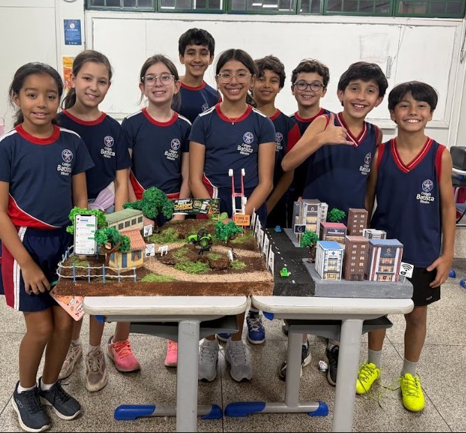
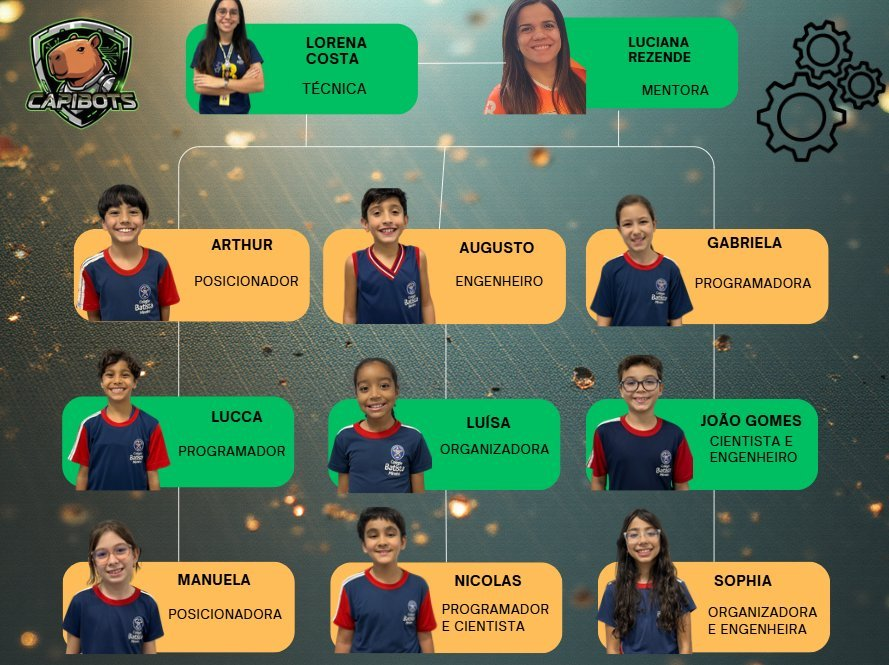
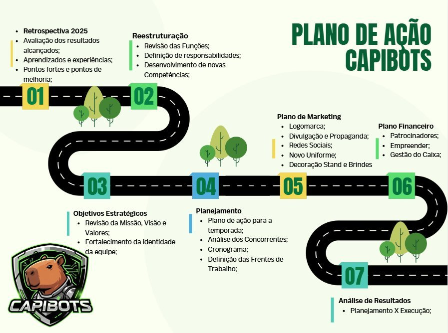
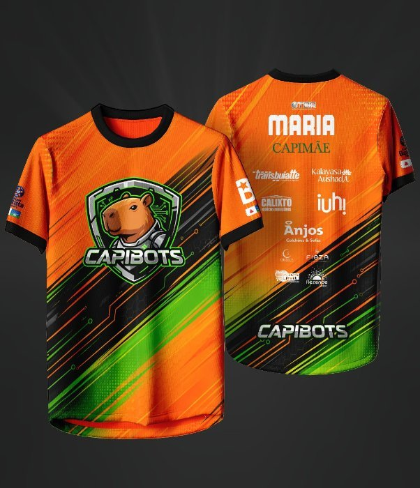
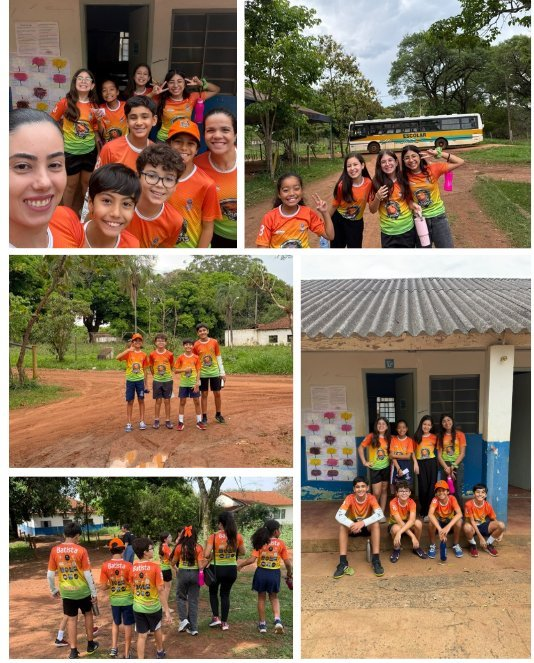
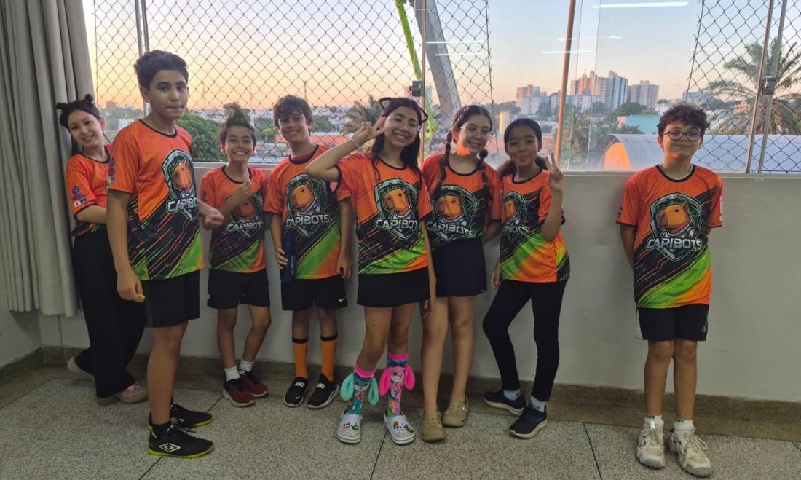

Apresentação
Este caderno mostra como a equipe Capibots se organizou para a temporada 2026 do Torneio Brasil de Robótica: quem faz o quê, como as decisões são tomadas, como o trabalho foi planejado, divulgado e financiado, e o que a equipe aprendeu quando algo não saiu como o previsto. Nesta segunda temporada, os nove integrantes partiram da experiência do ano anterior para redistribuir funções, estabelecer novas metas e conciliar três etapas do torneio em sete meses.
Os números principais da temporada até a etapa Regional: 9 patrocinadores, faturamento bruto de R$ 12.979,00, custos de R$ 10.430,75 e saldo de R$ 2.548,25; mais de 860 seguidores no Instagram; 46 respostas na pesquisa com estudantes; e a seleção do trabalho científico para a 31ª Feira Ciência Viva, da UFU.
1Conheça os Capibots
A equipe começou a ser idealizada em 2024 por Arthur, aluno que acompanhava as conquistas das equipes de robótica do Colégio Batista Mineiro. Em 2025, ele procurou a professora Lorena Costa e, juntos, formaram um grupo de nove alunos, hoje no 5º ano C do Ensino Fundamental, com 10 e 11 anos. O nome Capibots foi escolhido em conjunto, unindo a paixão por capivaras e por robótica, assim como o lema: "Unidos como capivaras, espertos como robôs".
Na estreia no TBR, em 2025, a equipe conquistou o 1º lugar na etapa interna, o 1º lugar no Desafio Prático e o 2º lugar geral na etapa Regional, e o 3º lugar geral na etapa Nacional, na categoria Kids 2. Em 2026, com os mesmos nove integrantes, venceu a ExpoTech, torneio interno do colégio, e teve desempenho de destaque no Esquenta TBR, evento preparatório para a Regional.

Fonte: acervo dos autores (2026).
| Item | Informação |
|---|---|
| Instituição | Colégio Batista Mineiro, Unidade Martins · Av. Estrela do Sul, 200, Martins, Uberlândia (MG) |
| Categoria | Kids 2 (todos os integrantes tinham 10 anos em 1º de janeiro de 2026, conforme o Vade Mecum) |
| Técnica | Lorena Costa Silva, 27 anos, formada em Ciências Biológicas |
| Mentora | Luciana Rezende Vieira, 41 anos, Ciência da Computação, pós-graduada em Design de Multimídias e mestre em Banco de Dados |
| Canais | Instagram e YouTube @equipecapibots · site www.capibots.com.br |
Fonte: elaborado pelos autores (2026).
| Integrante | Idade | Função |
|---|---|---|
| Arthur Henrique Martins Rocha | 10 | Posicionador |
| Augusto Diniz Coelho | 11 | Engenheiro |
| Gabriela Neri Sticca | 11 | Programadora |
| João Gomes Nazareth Souto | 11 | Cientista e Engenheiro |
| Lucca Rezende Vieira | 11 | Programador |
| Luísa Carvalho de Oliveira | 10 | Organizadora |
| Manuela Pereira Moreira de Souza | 11 | Posicionadora e Tesoureira |
| Nicolas Lima Ribeiro | 11 | Programador e Cientista |
| Sophia Arantes Borges | 11 | Engenheira e Organizadora |
Fonte: elaborado pelos autores (2026).
Patrocinadores (9): Anjos Colchões, Calixto Negócios Imobiliários, Clínica Orthus Fisioterapia, Farmácia Kalayasa Aushadi, Fieza Corretora de Seguros, iuh! Digital, Rezende Solar, Supermercado Super Frutt e Transbuiatte.
Colaboradores: Carlos Alberto Rosa Coelho (impressão 3D); Carlos Henrique Alves Vieira (palestra sobre IA); Cida Machado e Viviane Pereira dos Santos (analista pedagógica e gestora da Escola Municipal Rural Dom Bosco); Daniel Sávio (edição de vídeos); Luciana Arantes Buiati de Jesus (planejamento das impressões 3D); Suzan Carla Lopes de Lima (desenvolvimento técnico do Capi-Aprende); Maria Paula Marques e Thaise Meneguelli (coordenação e direção do colégio).
2Objetivos e metas da equipe
Para a Capibots, o TBR é a oportunidade de criar soluções para problemas reais enquanto desenvolve trabalho em equipe, criatividade, pensamento crítico, empatia e respeito. Nesta temporada, a equipe desenvolveu o Capi-Aprende: uma plataforma online para professores ligada a um aplicativo para alunos que funciona offline, com conteúdos, questões, simulados e um tutor de inteligência artificial que orienta o raciocínio do estudante mesmo sem internet. As metas definidas foram:
- dividir as tarefas de acordo com as habilidades de cada integrante e manter um ambiente saudável de cooperação;
- planejar e executar a pesquisa, unindo teoria e prática;
- divulgar a equipe pelo Instagram, pelo site e pelo canal no YouTube;
- viabilizar a participação no torneio com bom planejamento financeiro;
- conquistar a classificação para a etapa Nacional;
- avaliar o Capi-Aprende com pré-testes e pós-testes junto aos estudantes participantes;
- apresentar o projeto na Feira Ciência Viva;
- aprender com os desafios e celebrar as conquistas, independentemente do resultado.
3Organização da equipe
No início da temporada, a técnica Lorena propôs um novo formulário de escolha de funções, para que cada integrante refletisse sobre a experiência anterior e decidisse se continuaria na mesma função ou assumiria um novo desafio. Luísa passou de Posicionadora a Organizadora, buscando uma função com menos pressão e mais espaço para sua criatividade. Manuela assumiu o posto de Posicionadora ao lado de Arthur. Sophia ampliou sua atuação para Organizadora e Engenheira. Nicolas passou a acumular Programador e Cientista, e Augusto assumiu a Engenharia.

Fonte: autoral (2026).
| Função | Quem | Principais atribuições |
|---|---|---|
| Mentora | Luciana | Acompanhar todas as ações, dar suporte, manter a equipe organizada e fazer a ponte entre pais, equipe e escola |
| Técnica | Lorena | Acompanhar os treinos do Desafio Prático e orientar montagem, programação e Tecnologia & Engenharia |
| Engenheiros | Augusto, João Gomes e Sophia | Projetar, construir e ajustar o robô; construir o objeto e o ambiente da missão Maker |
| Posicionadores | Arthur e Manuela | Padronizar a posição de partida, construir gabaritos e conferir os elementos do tapete |
| Programadores | Gabriela, Lucca e Nicolas | Analisar o tapete, programar em blocos, definir a ordem das missões e manter robô e tablet carregados |
| Organizadoras | Luísa e Sophia | Comunicação, marketing, stand, ações empreendedoras e registro das atividades |
| Tesoureira | Manuela | Controle financeiro (caixa) da equipe |
| Cientistas | João Gomes e Nicolas | Pesquisar problemas reais da educação, buscar soluções e registrar as visitas técnicas |
Fonte: elaborado pelos autores (2026).
As frentes de trabalho foram distribuídas assim: caderno de Mérito Científico com os cientistas; caderno de Organização e Método com as organizadoras e a tesoureira; caderno de Tecnologia & Engenharia com Lucca, Gabriela, Arthur e Augusto; layout da plataforma Capi-Aprende com Nicolas e Lucca; pesquisa e captação de recursos com todos.
Quem conduz o trabalho são as próprias crianças: escolhem funções, pesquisam, propõem e testam ideias, decidem o que fica e põem a mão na montagem e na programação. Técnica e mentora organizam a rotina de treinos e tiram dúvidas sobre as regras. Os Capi-Pais apoiam a organização dos textos e dão suporte emocional, preservando o protagonismo dos filhos.
3.1 Decisões, conflitos e feedback
As decisões são democráticas. A escolha do tema de pesquisa começou com 11 propostas individuais, aprofundadas por quatro grupos com a ficha Capi Investigadores, até uma votação por critérios. O mesmo princípio valeu para logomarca, uniforme e botton. Nos treinos, as ideias para o robô também são discutidas e aperfeiçoadas em conjunto, com sugestões que vêm tanto dos programadores quanto dos posicionadores. Conflitos são resolvidos pelo diálogo, com intervenção da mentora ou da técnica quando necessário. A cada entrega importante, um ciclo de feedback registra pontos fortes, oportunidades de melhoria e metas para a etapa seguinte.
4Plano de ação para a temporada
O plano parte da retrospectiva de 2025 e segue sete passos: avaliação dos resultados anteriores, reestruturação das funções, objetivos estratégicos, planejamento, plano de marketing, plano financeiro e análise de resultados (Figura 3). A cada encontro, a mentora conduz um ciclo de planejar, executar e ajustar, e o diário de bordo registra decisões, erros e boas práticas.

Fonte: autoral (2026).
4.1 Compreensão da temporada 2026
O principal desafio é conciliar três etapas do TBR (Interna, Regional e Nacional) em sete meses, atendendo a todos os requisitos sem perder qualidade. Isso exige dividir o trabalho em frentes, acompanhar prazos e manter o engajamento das nove crianças em meio à nova rotina do 5º ano e às mudanças do início da pré-adolescência. A temporada também pede planejamento financeiro e familiar, prevendo inscrição, tapete e uma possível viagem para a Nacional, além de atenção às novas orientações do TBR, como o uso responsável da imagem das crianças e a plataforma TBR SIS.
4.2 Recursos humanos e proteção das crianças
As reuniões e os treinos acontecem no contraturno, após as aulas e aos sábados, no colégio ou na casa dos integrantes. Os encontros são presenciais ou online, com todos ou parte da equipe, conforme a pauta.
Na pesquisa de campo, a equipe obteve autorização da direção das escolas e concordância verbal das crianças, usou questionários sem nomes e não identificou os estudantes da Dom Bosco nas fotos. Para cumprir o Estatuto Digital da Criança e do Adolescente (Lei nº 15.211/2025, a "Lei Felca"), a Capibots criou sua própria Política de Comunicação, Uso de Imagem e Proteção Digital. Todos os responsáveis leram a política e assinaram o termo de autorização.
5Plano de marketing
O plano de marketing busca divulgar as ações da equipe, compartilhar aprendizados e envolver a comunidade. Os objetivos estratégicos foram revisados para a temporada (Quadro 4).
| Missão | Visão | Valores |
|---|---|---|
| Contribuir com a redução da desigualdade digital no acesso à educação, por meio da inovação e do desenvolvimento tecnológico. | Ser reconhecida no Torneio Brasil de Robótica como equipe de excelência em todos os desafios propostos. | Colaboração, Inovação, Aprendizado contínuo e Excelência. |
Fonte: autoral (2026).
5.1 Identidade visual
O mascote é uma capivara robô: tranquila, amigável e que valoriza o grupo, mas usa a tecnologia com inteligência. As cores verde e laranja transmitem alegria, energia e equilíbrio. Para 2026, a equipe manteve o desenho da logomarca e escolheu, por votação, um uniforme mais moderno e de cores fortes (Figura 4), além de novos bonés, bandeira e um botton especial para a Regional do Triângulo Mineiro. A identidade sonora inclui a música tema "A Capivara", do Planeta Oca, e o grito de garra de 2026, que ganhou versões em samba e rock criadas com apoio de IA:
"Capivara e Robozão,
Cuidam bem da Educação!
Com aprendizado e coração,
Vão salvar toda a missão!
CAPIBOTS!"

Fonte: acervo dos autores (2026).
5.2 Comunicação e divulgação
| Canal | Uso | Destaques |
|---|---|---|
| Teams (crianças) e WhatsApp (pais) | Comunicação interna, votações e decisões | Reuniões online também pelo Google Meet |
| Instagram @equipecapibots | Feed, reels, stories e carrosséis, com calendário planejado pelas organizadoras | Mais de 860 seguidores e mais de 9 mil visualizações no último mês |
| Site capibots.com.br | Feito por Nicolas e Lucca: equipe, projetos, blog, loja, contato e patrocinadores | Media Kit para patrocinadores e Quiz do Desafio Prático aberto a todas as equipes do TBR |
| YouTube @equipecapibots | Vídeos mais longos e programa "Intervalo Capibots" | Relatos de experiências e aprendizados da temporada |
| Stand | Planejado por Luísa, Sophia e Gabriela | Na ExpoTech: balões, banner da pesquisa, maquete e wind banner com patrocinadores |
Fonte: elaborado pelos autores (2026).
Depois dos feedbacks da etapa interna, a equipe reforçou o Mérito Científico com uma pesquisa direta com o público-alvo. O questionário, elaborado pelos cientistas com contribuição de todos, foi divulgado no Instagram e aplicado pela própria equipe na escola rural Dom Bosco, somando 46 respostas. O resultado contrariou a expectativa: quase todos têm internet em casa, mas na escola rural 15 de 26 crianças não têm computador nem tablet. Para a Regional, o stand terá itens sustentáveis, para reduzir o lixo, e uma capivara inflável como mascote.
6Treinamentos, visitas técnicas, reuniões e palestras
A equipe se dividiu em duplas e trios para pesquisar quatro oportunidades ligadas à educação: conectividade nas escolas (João Gomes, Gabriela e Manuela), acesso físico às escolas (Nicolas e Arthur), metacognição (Luísa e Sophia) e ensino de tecnologia (Lucca e Augusto). Cada grupo preencheu a ficha Capi Investigadores e apresentou as descobertas. A votação usou quatro critérios: o problema é relevante? Dá para investigá-lo com entrevistas? Existe chance de uma solução inovadora? Temos proximidade com o tema? A conectividade nas escolas foi a escolhida.
Com a pesquisa avançada, a equipe passou um sábado no colégio construindo a maquete, que compara a conectividade da cidade com a das escolas rurais, feita com materiais reciclados.
Na aproximação com a Escola Municipal Rural Dom Bosco, a escola pediu que o primeiro encontro fosse só com adultos. Em 20 de agosto, a mentora e dois pais conversaram com a analista pedagógica Cida Machado, apresentaram a equipe e agendaram a visita das crianças. Em 7 de outubro, toda a equipe apresentou o projeto aos alunos do 4º e 5º anos, às professoras, à diretora e à analista, e aplicou o questionário de quatro blocos sobre conectividade e estudo (Figura 5).

Fonte: acervo dos autores (2026).
No Esquenta TBR, torneio pré-regional, a equipe colocou o trabalho à prova como num simulado real. As notas e os comentários de Tecnologia & Engenharia, Mérito Científico e Organização e Método foram analisados, e os três trabalhos foram corrigidos para a Regional. Nas duas semanas anteriores ao torneio, os pais farão o papel de jurados em ensaios com muitas perguntas, para dar mais segurança e argumentação às crianças.

Fonte: acervo dos autores (2026).
7Publicação do projeto
O projeto "Aprender sem conexão: desigualdade digital e apoio ao estudo offline para crianças sem internet de qualidade" foi apresentado no Colégio Batista Mineiro, na Escola Municipal Dom Bosco, no site, no Instagram, no YouTube e na Feira Ciência Viva (Quadro 6). O protótipo em capiaprende.capibots.com.br segue aberto e é atualizado à medida que o desenvolvimento avança.
| Data | O que foi divulgado | Onde |
|---|---|---|
| 09/05/2026 | Tema escolhido para a temporada | Site capibots.com.br |
| 23/05/2026 | Artigo sobre conectividade das escolas brasileiras | Site capibots.com.br |
| 20/08/2026 | Problema e proposta de solução | Escola Municipal Dom Bosco |
| 02–05/10/2026 | Convite para o questionário online | Colégio Batista, Escola Neuza Rezende e Instagram |
| 07/10/2026 | Apresentação do projeto e questionário com 26 estudantes | Escola Municipal Dom Bosco |
| 09/10/2026 | Inscrição do trabalho, com resumo, objetivos e solução | Feira Ciência Viva – UFU |
| 15/10/2026 | Protótipo navegável aberto ao público | capiaprende.capibots.com.br |
| 15/10/2026 | Trabalho selecionado para a feira | 31ª Feira Ciência Viva – Museu Dica/UFU |
Fonte: elaborado pela equipe (2026).
8Gestão financeira
A gestão financeira, conduzida pela tesoureira Manuela, mapeou os custos de todas as fases (maquete, brindes, uniformes, infraestrutura, visitas, stand e logística), captou recursos e registrou cada entrada e saída em planilha, com transparência para toda a equipe. A regra foi não gastar acima do que foi arrecadado.
8.1 Captação de recursos
Foram usadas três estratégias: patrocínios, vaquinha online e ações de empreendedorismo. O plano de patrocínio teve duas cotas: Ouro (R$ 500,00) e Prata (R$ 300,00), ambas com marca na camiseta, post no Instagram e marca no banner da Regional, em tamanhos diferentes. Nove empresas aderiram.
| Faturamento | Valor (R$) |
|---|---|
| Patrocínios | 3.700,00 |
| Vaquinha online | 625,00 |
| Ações de empreendedorismo | 8.654,00 |
| Total | 12.979,00 |
| Custos | Valor (R$) |
|---|---|
| Tapete TBR 2026 | 1.298,25 |
| Inscrição Torneio Regional | 1.520,00 |
| Produtos Lojinha Capibots | 902,59 |
| Produtos ações empreendedoras | 2.892,00 |
| Camisetas Capibots | 2.310,00 |
| Bottons | 731,90 |
| Materiais e itens diversos | 776,01 |
| Total | 10.430,75 |
Fonte: planilhas de controle da equipe (2026).
| Ação | Como funcionou | O que as crianças aprenderam |
|---|---|---|
| Vaquinha Capibots Online | Campanha divulgada no Instagram, com as crianças convidando amigos, familiares e comunidade | Comunicação, argumentação e engajamento em torno de uma causa |
| Capi-Lanches | Venda de espetinhos e itens da lojinha nos Jogos Estudantis; preparo feito pelos pais por segurança | Todos os espetinhos vendidos; divulgação, abordagem e vendas |
| Lojinha Capibots | Produtos temáticos de capivara, Brasil e Copa do Mundo, vendidos nos momentos autorizados pela escola | Identificar oportunidades e tendências de mercado |
| Geladinho Gourmet | Venda na saída das aulas, numa sexta-feira de calor no início do mês, escolhida pelas crianças | Análise de mercado e escolha estratégica de data e local |
Fonte: elaborado pelos autores (2026).
Para a Nacional, que traz custos de viagem, hospedagem e alimentação, a equipe planeja rifas e ações empreendedoras mais lucrativas, além de reduzir os custos administrativos.
9Cronograma de trabalho
O cronograma distribui as tarefas, os responsáveis e os prazos para cada fase, e é acompanhado nas reuniões de alinhamento. O Quadro 8 resume as principais atividades.
| Período | Principais atividades | Responsáveis |
|---|---|---|
| Abril | Continuação da equipe, novo mentor, análise da temporada anterior, redefinição de funções, compra do tapete | Todos, técnica e mentora |
| Abril–Maio | Logomarca, lema, missão/visão/valores, site, Media Kit, definição do tema e ficha Capi Investigadores | Todos; Lucca, Sophia e Luísa |
| Maio–Junho | Captação de patrocínios, vaquinha, montagem do robô, treinos, brindes e decoração do stand | Todos; engenheiros e programadores |
| Junho | Cadernos técnicos e ExpoTech (Torneio Interno) | Responsáveis por caderno |
| Julho | Análise da ExpoTech, plano de melhorias, ações empreendedoras e novo uniforme | Mentora e todos |
| Agosto | Visita à Escola Dom Bosco, pesquisa bibliográfica e treinos do Desafio Prático | Mentora, cientistas e programadores |
| Setembro | Publicações do trabalho e revisão dos três cadernos | Todos |
| Outubro | Questionário na Dom Bosco, Esquenta TBR, correções e ensaios com os pais | Todos |
Fonte: elaborado pelos autores (2026), a partir dos cronogramas da versão integral.
10Resultados colhidos
Depois de sete meses de trabalho, o planejamento inicial se mostrou eficaz como guia. Manter a comunicação clara num grupo de nove foi desafiador e exigiu reuniões frequentes; técnica e mentora também precisaram traduzir temas técnicos e científicos para a linguagem das crianças. Nem todas as estratégias deram certo de primeira, e três correções de percurso mostram como a equipe reagiu (Quadro 9).
| Insucesso inicial | Correção de percurso | Aprendizado |
|---|---|---|
| A equipe esperava conseguir um patrocinador master com base nos resultados anteriores, mas empresas maiores tinham processos lentos e não aprovaram. | Foco nas cotas Ouro e Prata, com um benefício novo: a marca dos patrocinadores Prata também na camiseta. | Planejar exige flexibilidade. Mesmo sem patrocinador master, a captação avançou. |
| Depois da conversa com a escola, a equipe concluiu que os alunos quase não estudavam em casa e não usavam IA, sem ter ouvido nenhum estudante. | O questionário mostrou que 13 de 26 estudam principalmente em casa e 21 de 26 já conversaram com um assistente de IA. | A primeira informação abre a investigação; quem fecha são os dados. |
| No pré-regional, o Robôvara ficou girando em torno de si mesmo diante dos jurados. | Os programadores investigaram até encontrar a causa, corrigiram a programação e refizeram, uma a uma, todas as saídas da base. | Quando a estrutura do robô muda, toda a programação precisa ser revista e testada. |
Fonte: elaborado pelos autores (2026).
| Área | ExpoTech (interna) | Esquenta (pré-regional) | Planejamento para a Regional |
|---|---|---|---|
| Organização da equipe | Sucesso | Sucesso | Reavaliar funções conforme habilidades e competências |
| Comunicação | Sucesso | Sucesso | Garantir comunicação clara e eficaz entre a equipe |
| Gestão do tempo | Sucesso | Sucesso | Seguir o cronograma e agir com antecedência |
| Plano financeiro | Sucesso | Sucesso | Ações empreendedoras mais lucrativas e alinhadas à estratégia |
| Plano de marketing | Sucesso | Sucesso | Manter redes sociais e publicação do trabalho, como na Ciência Viva |
| Treinamentos e visitas | Atenção: dificuldade em agendar a visita à escola rural | Sucesso | Programar visitas a empresas inovadoras e escolas públicas |
Fonte: elaborado pelos autores (2026).
A seleção do trabalho para a 31ª Feira Ciência Viva, da UFU, evento oficial da Semana Nacional de Ciência e Tecnologia, coroa a temporada até aqui. Mais do que competir, os integrantes desenvolveram criatividade, pensamento crítico, responsabilidade, empatia e a capacidade de respeitar opiniões diferentes e superar desafios juntos. A equipe encerra esta etapa com orgulho do que construiu e percebe que sua trajetória já inspira outros alunos do Colégio Batista Mineiro a descobrir a robótica.